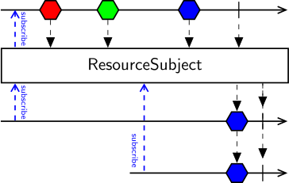

ResourceSubject stores and passes the single last value emitted by the source sequence to each subscribed observer. The value is also only sent out after the source sequence terminates. If the source sequence does not emit any values, ResourceSubject will also complete without emitting any values.
Warning
The type of the stored value must be IDisposable. When the enclosing workflow scope is terminated, the value will be disposed to free any allocated resources, such as file or memory handles.
Any observers which subscribe after the source sequence terminates will immediately receive the stored value. If the source sequence terminates with an error, ResourceSubject will not emit any values but will pass along the error notification to all observers.